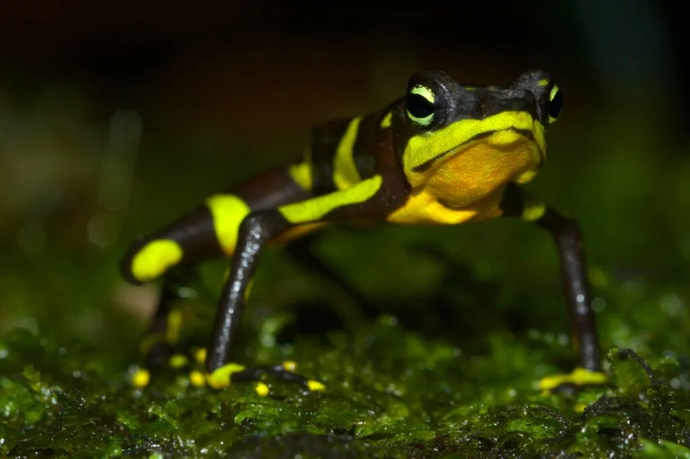

Top 9 Cool Frogs

The difference between frogs and toads is that frogs have longer legs and are made for hopping whereas toads crawl around and have dry skin.
#9 The Purple Frog (Nasikabatrachus sahyadrensis)

They can be found only in the Western Ghats range in India, and is best known for its formless, bloated shape - this shape helps them cling onto submerged rocks, allowing them to fight strong river currents.
The Purple frog spends most of its life underground and only leaves its tunnel for two weeks every year.
#8 Glass Frog

Belonging to the amphibian family Centrolenidae (found in the rain forests of Costa Rica, Columbia and Ecuador), the glass frog can climb trees using their sticky webbed feet and can jump up to more than 3 metres!
They are transparent and translucent so the heart, liver and gastrointestinal tract are visible through the skin. This is such an evolutionary advantage because the frog’s edges are softened to match the relative brightness of its surroundings and so can appear camouflaged.
#7 Golden Poison Frog (Phyllobates terribilis)

The golden poison frog is the most poisonous poison dart frog. They synthesise batrachotoxin which causes paralysis and heart failure. This frog contains one milligram of the poison - enough to kill between 10 and 20 humans, or 2 African bull elephants.
Indigenous people in Columbia use the poison in darts to hunt for food, soaking arrows and darts in the fluid.
#6 American Bullfrogs (Lithobates catesbeianus)
American bullfrogs live in swamps, ponds and lakes. The males make sounds similar in mating season to bulls bellowing. They have very speedy striking tongues - much like a slingshot.
#5 Pobblebonk Frog (Limnodynastes dumerilii)
The pobblebonk frog, also known as the eastern banjo frog, is one of the world’s loudest amphibians. During the breeding season, males produce a loud, resonating “bonk” call to attract females. This “bonk” sound/call can reach up to 120 decibels! Pobblebonk frogs are nocturnal and spend most of their time burrowed underground. These creatures emerge under the cover of darkness to hunt and nourish themselves.
#4 Harlequin Frog (Atelopus)
They are famous for their vibrant displays of colour and striking patterns, which not only serve to attract potential mates but also act as a warning to predators of their poisonous nature. In addition, the harlequin frog has another unique defence mechanism. When threatened it will assume a defensive position with its arms spread out. This helps to scare away predators and can even cause them to change direction.
#3 Giant Monkey Frog (Phyllomedusa bicolor)
Reaching up to 6 inches (15 cm) in length, these frogs are arboreal, meaning that they live in trees and tend to be active during nocturnal hours. They produce a distinctive call, which is a series of loud, guttural “wok” sounds. Although their skin secretions can be irritating to humans, they are an important part of rainforest ecosystems as they help control populations of insects and other small animals.
#2 Asian Painted Frog (Kaloula pulchra)
When it gets dry, the frogs dig down and bury themselves underground. After it rains, they re-emerge and call for their mates. When Asian-painted frogs feel threatened, they inflate their lungs and secrete a noxious white substance to ward off attackers.
#1 Black Rain Frog (Breviceps fuscus)

They have been observed to puff up their body to make them up to 7 times larger as a defence mechanism. When in danger, they fill up with air to appear bigger in an attempt to ward off predators like bush pigs, birds, and snakes. They are also able to use this ability to jam themselves in their burrows preventing some snakes from pulling them out of the burrow.